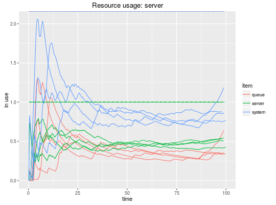

wrap(env)
This function extracts the monitored data from a simulation environment making it accessible through the same methods. Only useful if you want to parallelize heavy replicas (see the example below), because the C++ simulation backend is destroyed when the threads exit.
library(parallel) mm1 <- create_trajectory() %>% seize("server", 1) %>% timeout(function() rexp(1, 2)) %>% release("server", 1) envs <- mclapply(1:4, function(i) { simmer("M/M/1 example") %>% add_resource("server", 1) %>% add_generator("customer", mm1, function() rexp(1, 1)) %>% run(100) %>% wrap() }) plot_resource_usage(envs, "server")
get_mon_arrivals, get_mon_attributes, get_mon_resources,
get_n_generated, get_capacity, get_queue_size,
get_server_count, get_queue_count.